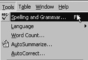
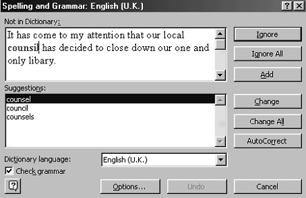
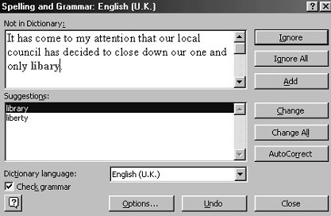
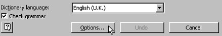
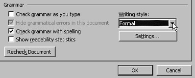
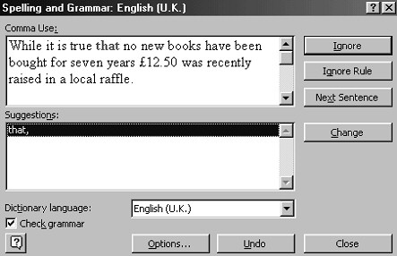

Free
computer Tutorials
|
Free
computer Tutorials
|
|
 home home |
|
||||||
The Microsoft Word Spellchecker |
|||||||
|
Check your Spelling with Microsoft WordIf you haven't been following along with these lessons, you can download the library letter here: If you have "Check spelling as you type" switched on, you should have red wiggly lines under three of the words in your letter: counsil, libary, and decicion. Microsoft Word has a spell checker that you can use to correct any misspelled words. To launch the spell checker you can either click on Tools, then select Spelling and Grammar  Or just press the F7 key on your keyboard. You can have Word check the entire document for spelling mistakes, or you can check the spelling for selected areas. To check the spelling of a selected area, you first have to highlight the text you want Word to check. Next, click Tools > Spelling and Grammar. Or just press the F7 key. To check the entire document, just go straight to Tools > Spelling and grammar, or press F7. You'll get the following dialogue box:  There are two main areas of the dialogue box: Not in dictionary, and Suggestions. The text box below the words "Not in dictionary" shows part of your text, and one spelling mistake at a time. The spelling mistake is in red. In the text box below the word "Suggestions" are alternatives to the word you got wrong. In the image, you can see that three alternative words are suggested for counsil: counsel, council, and counsels. What we really meant was, of course, council. So we want to change counsil to council. To make the change, do the following:
 The next word we spelled wrong is now highlighted in red: libary. As you can see, Word is giving us two alternatives in the Suggestions box: library, and liberty. The correct spelling was library, and this is already highlighted in the Suggestions box. So we can just go ahead and click the Change button. Microsoft will move on and pick our third misspelled word: decicion. Make the changes to your letter so that the correct word is inserted. When the spell check is complete, the dialogue box will vanish. You'll then get a message box telling you that the spelling and grammar check is complete. Click OK to get rid of the message box.
Checking GrammarAs you can see from the images, there is a tick in the box "Check grammar". Click on the tick to get rid of it, if you don't want Word to check all of your grammatical errors. The grammar checking in Word Processing software can be a little bit intimidating, especially if you have had no training in the finer points of the English language. The grammar checking can also make very strange corrections. Watch what happens when we click the Options button at the bottom, and reset the grammar to Formal.  Notice in the image below that "Check grammar with spelling is still ticked, and the Writing style has been reset to Formal, meaning Formal English. The other options here are: Casual, Standard, Technical and Custom.  When we click OK we are returned to the Spelling and Grammar dialogue box. Word has now moved on to check the grammar. But notice what it has picked us up on:  It seems to think we should put a comma after "that". It is suggesting we put this: "While it is true that, no new books have been bought". Which is just plain wrong. The grammar checker also seems to have a bee in its bonnet over the passive voice, and pulls you up about this on every occasion. So you might want to turn off the grammar checking altogether. To do that, go back to the Options tab strip and untick the box "Check grammar with spelling." You'll be left in peace about your passive voices.
OK, it's time for your first Exercise. Click here to do the Exercise--> <--Back to the Word Contents Page |